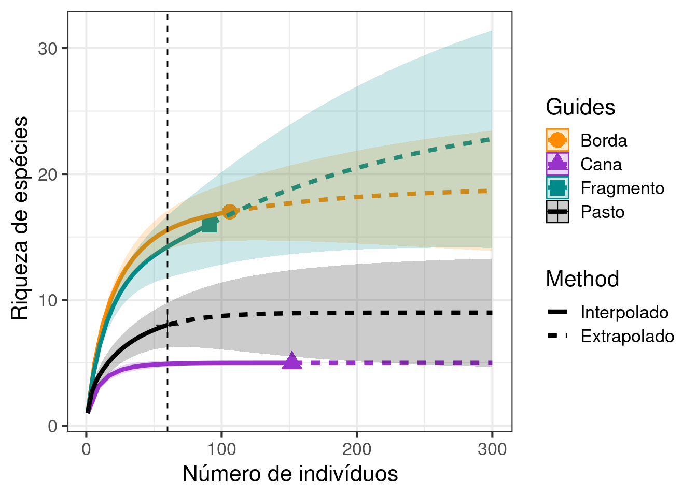
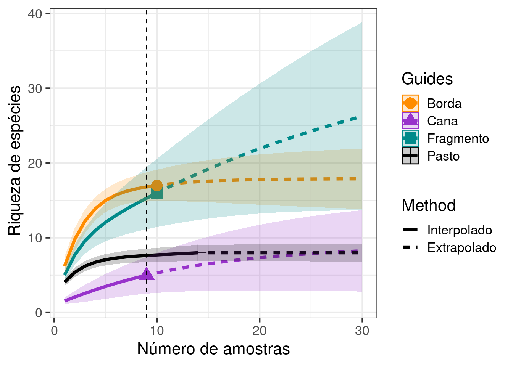
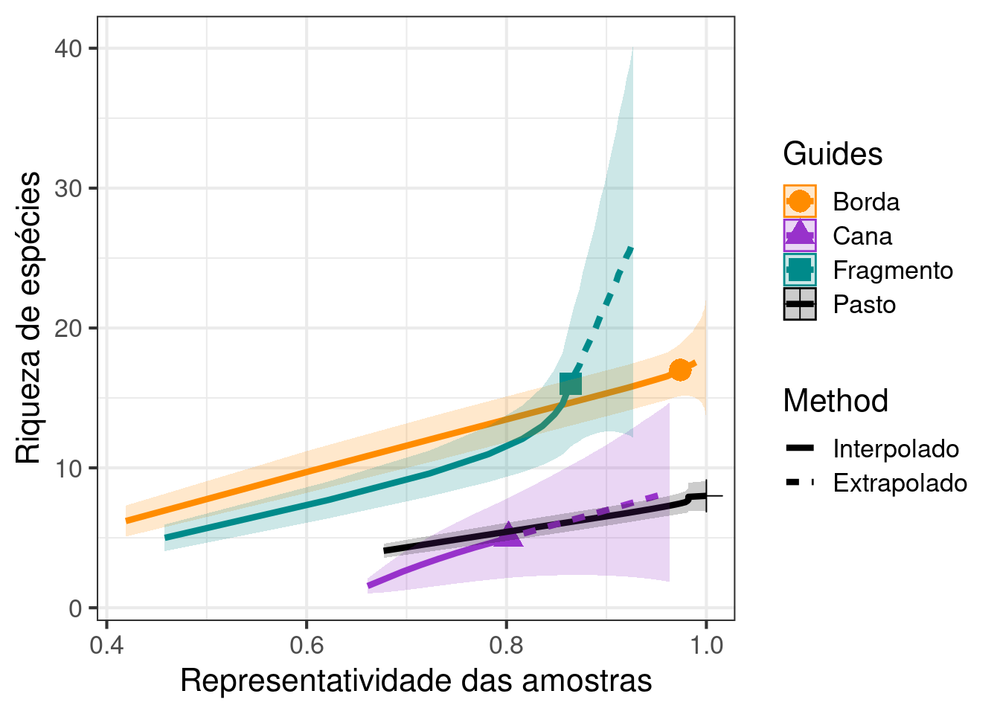

Cap. 10 - Rarefação
10.1 Avalie se diferentes tipos de uso da terra (fragmento florestal, borda de mata, área de pastagem e cana de açúcar) apresentam diferentes riquezas de espécies? Qual a sua interpretação? Faça um gráfico com os resultados.
Solução:¨
# Carregar a planilha com os dados
exercicio_1 <- ecodados::Cap10_exercicio1
## Número de indivíduos por local
colSums(exercicio_1)
#> Fragmento Pasto Borda Cana
#> 91 60 106 152
## Análise de rarefação
resultados_exercicio_1 <- iNEXT(exercicio_1, q = 0,
datatype = "abundance", endpoint = 300)
## Gráfico
ggiNEXT(resultados_exercicio_1, type = 1) +
geom_vline(xintercept = 60, lty = 2) +
scale_linetype_discrete(labels = c("Interpolado", "Extrapolado")) +
scale_colour_manual(values = c("darkorange", "darkorchid", "cyan4", "black")) +
scale_fill_manual(values = c("darkorange", "darkorchid", "cyan4", "black")) +
labs(x = "Número de indivíduos", y = " Riqueza de espécies") +
theme_bw(base_size = 16)
10.2
O estudo é o mesmo do exercício anterior. Contudo, ao invés da rarefação baseada na abundância, faça rarefações baseadas no número de amostras. Qual a sua interpretação considerando os resultados do exercício 1? Faça um gráfico com os resultados.
Solução:¨
# Carregar a planilha com os dados
exercicio_2 <- ecodados::Cap10_exercicio2
# Verificar se carregou corretamente
head(exercicio_2)
#> Fragmento Pasto Borda Cana
#> amostras 10 14 10 9
#> sp1 5 0 2 0
#> sp2 1 5 1 0
#> sp3 4 0 3 0
#> sp4 1 14 5 1
#> sp5 6 0 3 1
## Análise de rarefação
resultados_exercicio_2 <- iNEXT(exercicio_2, q = 0,
datatype = "incidence_freq", endpoint = 30)
## Gráfico
ggiNEXT(resultados_exercicio_2, type = 1, color.var = "site") +
geom_vline(xintercept = 9, lty = 2) +
scale_linetype_discrete(labels = c("Interpolado", "Extrapolado")) +
scale_colour_manual(values = c("darkorange", "darkorchid", "cyan4", "black")) +
scale_fill_manual(values = c("darkorange", "darkorchid", "cyan4", "black")) +
labs(x = "Número de amostras", y = " Riqueza de espécies") +
theme_bw(base_size = 16)
10.3 Use os dados dos exercícios anteriores e calcule a rarefação baseada na cobertura de amostragem (coverage-based). Qual a sua interpretação considerando os resultados anteriores? Faça um gráfico com os resultados.
Solução:¨
# Rarefação considerando a cobertura da abundância
resultados_exercicio_1 <- iNEXT(exercicio_1, q = 0,
datatype = "abundance", endpoint = 300)
## Gráfico
# Visualizar os resultados da rarefação *coverage-based*.
ggiNEXT(resultados_exercicio_1, type = 3, color.var = "site") +
scale_linetype_discrete(labels = c("Interpolado", "Extrapolado")) +
scale_colour_manual(values = c("darkorange", "darkorchid", "cyan4", "black")) +
scale_fill_manual(values = c("darkorange", "darkorchid", "cyan4", "black")) +
labs(x = "Representatividade da abundância", y = "Riqueza de espécies") +
theme_bw(base_size = 16)
# Rarefação considerando a cobertura das amostras
resultados_exercicio_2 <- iNEXT(exercicio_2, q = 0,
datatype = "incidence_freq", endpoint = 30)
## Gráfico
# Visualizar os resultados da rarefação *coverage-based*.
ggiNEXT(resultados_exercicio_2, type = 3, color.var = "site") +
scale_linetype_discrete(labels = c("Interpolado", "Extrapolado")) +
scale_colour_manual(values = c("darkorange", "darkorchid", "cyan4", "black")) +
scale_fill_manual(values = c("darkorange", "darkorchid", "cyan4", "black")) +
labs(x = "Representatividade das amostras", y = "Riqueza de espécies") +
theme_bw(base_size = 16)